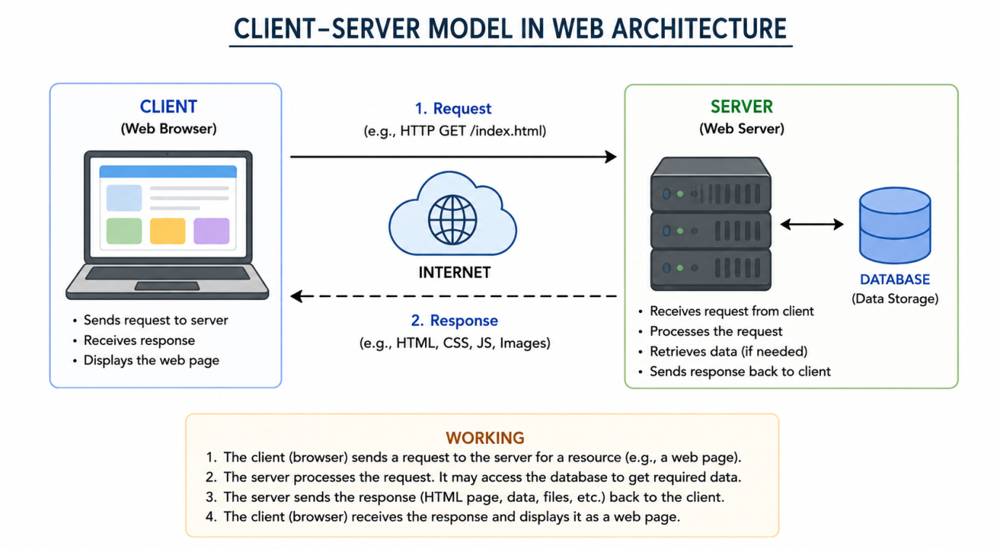
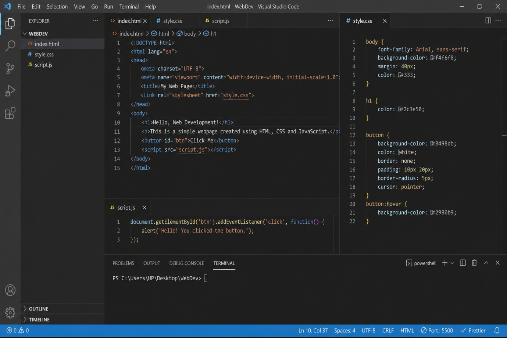
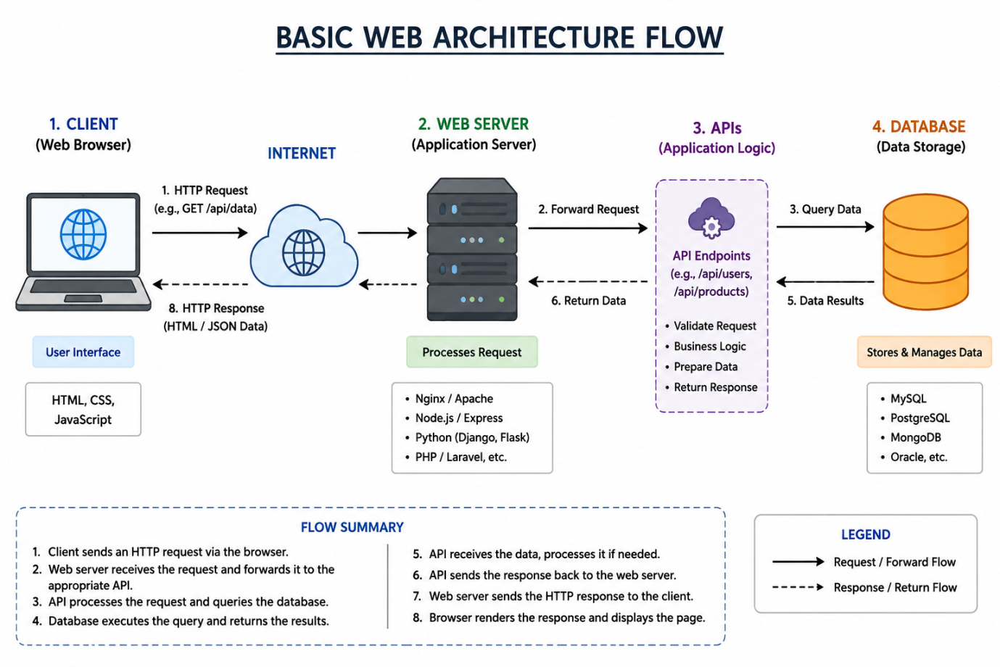

Submitted by Aman Mudgal • Instructor: Akash Gupta • BridgeLabz Training
| Domain | Definition | Core Technologies | Real-World Example |
|---|---|---|---|
| Frontend | Client-side layer users see and interact with directly. | HTML5, CSS3, JavaScript, React | Amazon product carousel and add-to-cart button. |
| Backend | Server-side engine processing logic and data storage. | Node.js, Express, Java, Python, SQL | Payment gateway deducting amount and checking card validity. |
| Full-Stack | End-to-end development of both client and server layers. | MERN Stack (MongoDB, Express, React, Node) | Complete online food delivery portal from database to UI. |

Figure 1: Client-Server communication flow over TCP/IP using HTTP requests and responses.
GET request for the HTML document.200 OK response.A web server is a software and hardware system that stores, processes, and delivers web pages to clients over the Internet via HTTP/HTTPS.
Commonly Used Web Servers:
Configured with Live Server, Prettier, HTML/CSS Support, and JavaScript ES6 Snippets.

Figure 2: Verified Visual Studio Code setup ready for HTML, CSS, and JS development.
| Feature | Static Website | Dynamic Website |
|---|---|---|
| Content | Pre-rendered fixed content; same for all visitors. | Generated on-the-fly customized per user session. |
| Database | No database connection needed. | Relies on database queries (SQL / NoSQL). |
| Example | Portfolio, personal resume site, documentation. | Facebook, Amazon, YouTube, Netflix. |

Figure 3: Full-stack architecture flow connecting Client, API Gateway, Application Server, and Database.